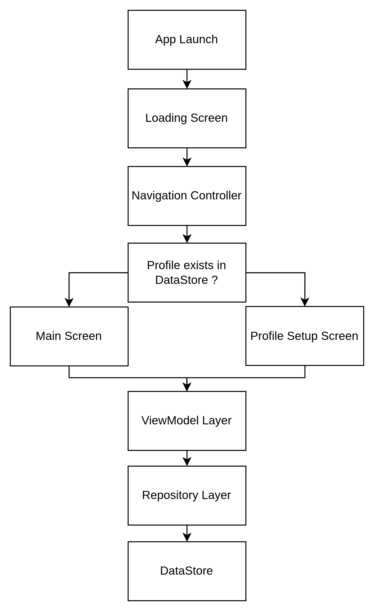

Quest Log est une application de productivité Android qui gamifie le suivi de tâches journalières à travers des méchaniques de RPG. Les utilisateurs complètent des quêtes quotidiennes et hebdomadaires pour gagner de l'expérience, monter de niveaux et éviter les pénalités, ce qui encourage les habitudes consistentes par une progression inspirée des jeux.
Le projet suit une architecture MVVM combiné avec une couche repository pour sélarer l'UI, l'état et la gestion des données :
- ViewModel gère l'état de l'UI et la logique métier
- La couche repository rend l'accès aux données asbtrait
- L'IU Jetpack Compose réagit aux changements d'états

Les données utilisateur (profile, progression, état des quêtes) sont persistés localement en utilisant DataStore. Ce système garantit :
- La persistance
- Mises à jour d'état consistant
- Stockage local léger sans une base de données entière